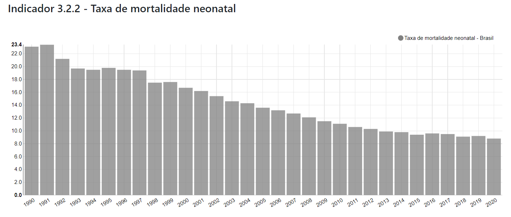

Indicadores
A ODS trabalha com a sáude de todas as idades, incluindo recém-nascidos e crianças por isso, até 2030 acabar com as mortes evitáveis de recém-nascidos e crianças menores de 5 anos, com todos os países objetivando reduzir a mortalidade neonatal para pelo menos 12 por 1.000 nascidos vivos e a mortalidade de crianças menores de 5 anos para pelo menos 25 por 1.000 nascidos vivo

Taxa de mortalidade neonatal
Os dados mostram o número de mortalidade neonatal, ou seja, de crianças com recém nascidas com menos de 5 anos de idade, ao decorrer dos anos apartir de 1990 até 2020
Formulário
Clique aqui para mais detalhes